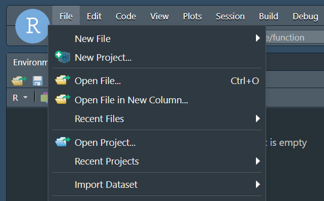
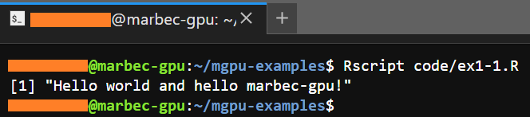
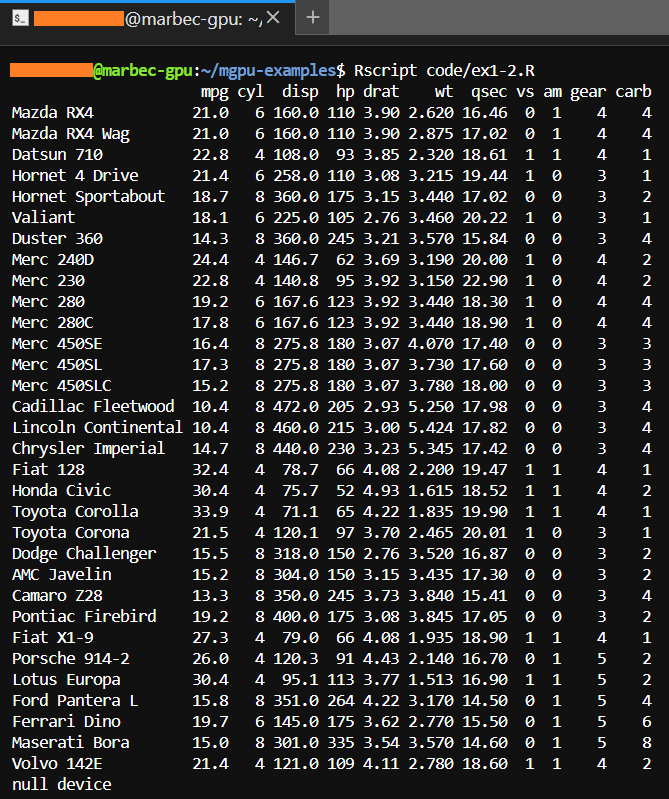

print("Hello world and hello marbec-gpu!")Ejecutando scripts de R en marbec-gpu
Ejecutar scripts de R en marbec-gpu.
Créditos de la imagen: Андрей Сизов en Unplash
Empezando a trabajar con marbec-gpu
Un poco de orden
Creando un directorio de trabajo
Al igual que cuando se trabaja con RStudio de manera local (i.e. en nuestra PC), se recomienda definiendo claramente nuestro directorio de trabajo. Esto es sumamente importante porque cualquier proceso que ejecutemos (ya sea desde RStudio o Terminal) utilizará ese directorio como referencia para hallar los archivos de entrada, salida o incluso otros scripts.
Para nuestro caso, hemos creado una carpeta llamada mgpu-examples/ en donde a su vez existen las subcarpetas code/, inputs/, outputs/ y figures/. La creación de carpetas en marbec-data puede hacerse directamente desde la interfaz web (dando click a File station y luego usando el botón Create folder), pero también podemos copiar-pegar los elementos ya existentes en nuestra PC hacia la carpeta de trabajo.
Creando un proyecto de RStudio
Lo siguiente NO es obligatorio, pero sí muy útil, sobre todo cuando se trabaja con RStudio y es crear un proyecto de RStudio. Para ello, iremos a File y luego a New Project.

Luego, en la ventana que nos aparece, daremos click a Existing directory, luego a Browse y daremos click a la carpeta que hemos definido como nuestro directorio de trabajo (en nuestro caso, mgpu-examples/). Luego, Aceptar y finalmente en el botón Create Project. Rstudio parpadeará un poco y luego nos mostrará la misma ventana, pero dentro del proyecto establecido. La manera más sencilla de comprobar que el proyecto se ha creado en la carpeta correcta (mgpu-examples/ en nuestro caso) es verificando que justo en el panel de Console, a la derecha de la versión de R, aparezca únicamente la ruta de nuestra carpeta principal (y no alguna de las subcarpetas, e.g. mgpu-examples/code/ o mgpu-examples/inputs/).

Antes de decir
hello
marbec-gpu incorpora la posibilidad de trabajar con RStudio (Server); sin embargo, esta interfaz deberá utilizarse ÚNICAMENTE para PREPARAR nuestros scripts antes de ser ejecutados utilizando toda la potencia de nuestro server. En otras palabras, dentro del entorno de RStudio podremos cargar archivos no tan grandes y realizar operaciones básicas, pero en ningún momento debemos ejecutar un proceso complejo (pesado) desde ahí, sino desde Terminal.
Hello world! (ejemplos sencillos)
Ejemplo 1-1
Iniciaremos con lo más sencillo: crear un script en R e imprimir el (famosísimo) mensaje “Hello world!”.
Empezaremos abriendo una sesión de RStudio a partir del entorno JupyterLab (si desseas conocer cómo llegar hasta ahí, revisa el post de Introducción a
marbec-gpu).Una vez dentro del entorno RStudio, crearemos un nuevo script (File -> New file -> R script) el cual contendrá una única línea:
Luego, guardaremos ese script con el nombre code/ex1-1.R (code/ hace referencia a una subcarpeta creada anteriormente dentro del working directory de nuestro proyecto en RStudio).
Ahora viene lo interesante, dentro de nuestro navegador, debemos volver a la pestaña de Launcher y abrir una ventana de Terminal (dando click al ícono correspondiente).
Por defecto, Terminal abrirá una sesión en la carpeta local asignada a nuestro usuario. Desde ahí, debemos llegar a la carpeta que hemos establecido como working directory; es decir, la carpeta que nuestro script reconocerá como directorio de trabajo (ya sea que hayamos decidido usar RStudio o no para crearla o crear un proyecto dentro de ella). Asumiendo que nuestro working directory es la carpeta
mgpu-examples/, debemos llegar a ella utilizando el comandocd:
cd mgpu-examples/
¿cómo saber que hemos llegado a la carpeta correcta?
En primer lugar, el prompt indicará el nombre de la carpeta en la que se encuentra.

Además, podemos ejecutar el comando ls con el que se mostrará las subcarpetas y archivos dentro de la carpeta a donde hemos llegado. Si todo coincide, pues lo hicimos bien.

- A continuación, ejecutaremos en la Terminal la siguiente orden:
Rscript code/ex1-1.Ry el resultado deberá ser que justo lo que se nos mostraría en una sesión habitual de R.

Ejemplo 1-2
En este siguiente ejemplo, mostraremos un script que genera y guarda archivos en nuestro working directory en donde previamente, crearemos dos carpetas nuevas (figures/ y outputs/) a través del comando mkdir del siguiente modo:
mkdir figures/ outputs/
Note
Dentro del entorno de Terminal, no es posible observar gráficos de forma interactiva (como en RStudio), por lo que si se desea conservar cualquier figura, se deberá incluir siempre el código para guardarla dentro del script que ejecutemos. Dependiendo del entorno gráfico, podemos usar funciones como png, bmp, jpeg, pdf (para entorno graphics), o ggsave (para entorno ggplot2).
- Ahora, vamos a RStudio para crear el siguiente script y a guardarlo en code/ex1-2.R:
# Print mtcars
print(mtcars)
# Export mtcars as a csv
write.csv(x = mtcars, file = "outputs/mtcars.csv")
# Create and save a scatterplot
png(filename = "figures/fig_1-1.png")
plot(x = mtcars$mpg, y = mtcars$disp,
xlab = "Miles per (US) gallon", ylab = "Displacement (cu.in.)")
dev.off()- Seguidamente, volvemos al entorno de Terminal y ejecutaremos nuestro nuevo script con el comando
Rscript code/ex1-2.R. Inmediatamente, se mostrará la tabla demtcarsya que eso es lo que ordena la primera línea de nuestro script.

- Sin embargo, si ejecutamos en Terminal el comando
lspara las carpetas figures/ y outputs/, veremos que aparecen los dos archivos que ordenamos crear dentro de nuestro script.

- Si los archivos creados son los que esperamos recolectar de nuestro análisis, podemos descargarlos a través de Filezilla (ver el post correspondiente).
Previsualizar figuras
Si bien no es posible obtener una previsualización de figuras en Terminal o JupyterLab ya que estos no cuentan con un visor de imágenes, sí es posible hacerlo desde el entorno web de marbec-data. No obstante, se trata de un visor básico y solo disponible para los tipos de archivos más comunes.
Hello universe! (procesos en paralelo)
Ejemplo 2-1: Un bucle en un solo núcleo
- Empezaremos creando un script (que guardaremos como code/ex2-1.R) que contenga un bucle sencillo que genere 20 matrices de 100x100 con valores aleatorios y las guarde en archivos csv distintos dentro de la carpeta outputs/ex2-rndmats/ (recuerda que debes crear previamente esa carpeta usando
mkdir):
# Setting number of rows and columns
row_n <- 100
col_n <- 100
for(i in seq(20)){
# Create random matrix
rndMat <- matrix(data = runif(n = row_n*col_n), nrow = row_n, ncol = col_n)
# Save matrix
write.csv(x = rndMat,
file = sprintf(fmt = "outputs/ex2-rndmats/mat_%02d.csv", i),
row.names = FALSE)
# Print a message at the end of each step
cat(sprintf(fmt = "Matrix %02d finished!\n", i))
}- Ahora, ejecutaremos nuestro script en Terminal (con el comando
Rscript code/ex2-1.R) y observaremos que todo ha ido bien si los mensajes al final de cada paso del bucle se muestran correctamente y si además al ejecutar el comandolssobre la carpeta objetivo vemos los archivos creados:

Siempre correr un ejemplo pequeño primero
Ya en una ejecución real, lo recomendable es siempre intentar con un ejemplo pequeño que nos permita corroborar que nuestro script va bien ANTES de poner toda la carne en el asador tratando de ejecutar el proceso pesado. Además, si nuestro script devuelve figuras o archivos, ejecutar un script pequeño de corroboración nos permite revisar rápidamente si los archivos generados con coherentes con lo que esperamos obtener.
Ejemplo 2-2: Un bucle en múltiples núcleos
- Partiendo del ejemplo anterior, convertiremos nuestro script en uno que ejecute los procesos de forma paralela. Para ello aprovecharemos las herramientas de los paquetes foreach y doParallel. Nótese que los nombres de los archivos de este script empezarán con las letras
mc_para poder reconocerlos respecto a los obtenidos en el ejemplo anterior:
# Setting number of rows and columns
row_n <- 100
col_n <- 100
require(foreach)
require(doParallel)
# Registering cluster
cl <- makeCluster(spec = 20)
registerDoParallel(cl = cl)
# Run multithread process
out <- foreach(i = seq(20), .inorder = FALSE) %dopar% {
# Create random matrix
rndMat <- matrix(data = runif(n = row_n*col_n), nrow = row_n, ncol = col_n)
# Save matrix
write.csv(x = rndMat,
file = sprintf(fmt = "outputs/ex2-rndmats/mc_mat_%02d.csv", i),
row.names = FALSE)
NULL
}
# Finish cluster
stopCluster(cl)- Ahora, ejecutaremos nuestro script en Terminal (con el comando
Rscript code/ex2-2.R) y observaremos que todo ha ido bien si al ejecutar el comandolssobre la carpeta objetivo vemos los archivos creados:

Note
Es importante notar un par de cosas:
En el script del segundo ejemplo,
foreachse encuentra asignado a un objeto (out) el cual recibirá el último objeto generado dentro de cada paso del loop. Si lo que se desea es únicamente obtener archivos que se exportarán (figuras, tablas, NetCDF, etc.), hay que asegurarse de dejar unNULLen la última línea dentro del bucle. Por otro lado, si lo que se desea es obtener un objeto y éste se coloca en esa posición,foreachlo compilará utilizando la funciónlist, i.e. el objeto final (out) será una lista que tendrá tantos niveles como pasos haya en el bucle. Así mismo, es importante tener en cuenta que internamenteforeachejecuta una pequeña sesión de R aparte por lo que es necesario indicar los paquetes adicionales requeridos a través del argumento.packages(ver el ejemplo siguiente).El argumento
spec = 20dentro demakeClusterhace referencia a la cantidad de hilos de proceso que se utilizarán para ejecutar el bucle, ¿recuerdas que una de las opciones al momento de crear tu server enmarbec-gpuera elegir la cantidad de CPUs (2, 4, 8, 16, 32…)? Bueno, pues es justamente con este argumento en donde indicarás esa cantidad de nucleos lógicos. Recuerda que otro aspecto importante es la RAM. En un momento determinado cada proceso corriendo dentro de cada hilo tendrá que cargar todo lo que necesitaría un solo proceso simple. Dicho de otro modo, si en un proceso de núcleo simple, en cada paso de nuestro bucle se tiene que cargar 5 archivos NetCDF que ocupan 5 GB en RAM, si ejecutamos ese proceso en multinúcleo y definimosspec = 40, en un momento se tendrán que cargar 5GBx40 (200 GB) en RAM en simultáneo. Así que no solo debes elegir bien la configuración de tu servidor (respecto al script que planeas ejecutar), sino también un aproximado de lo que se consume en cada proceso independiente, con el fin de no saturar tu servidor.marbec-gpues grande, pero tiene sus límites.